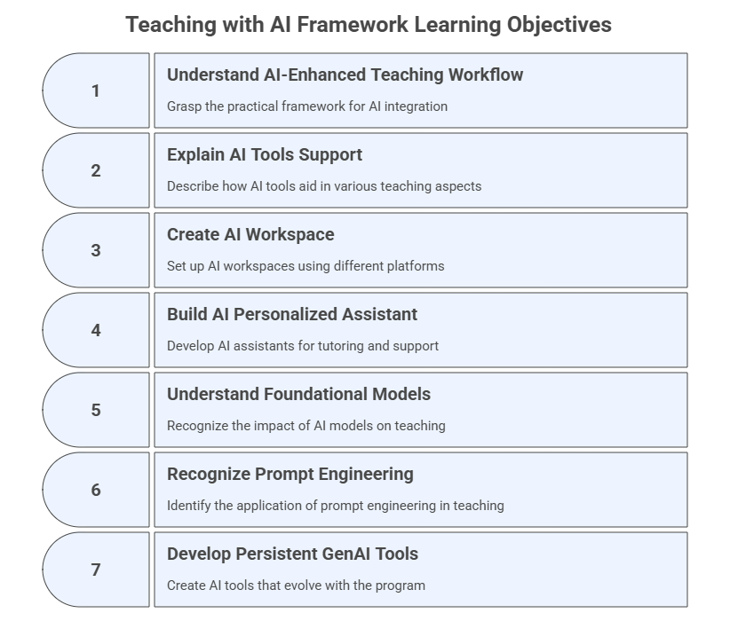
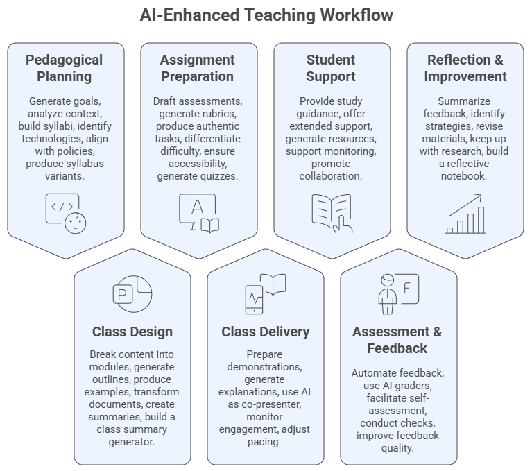
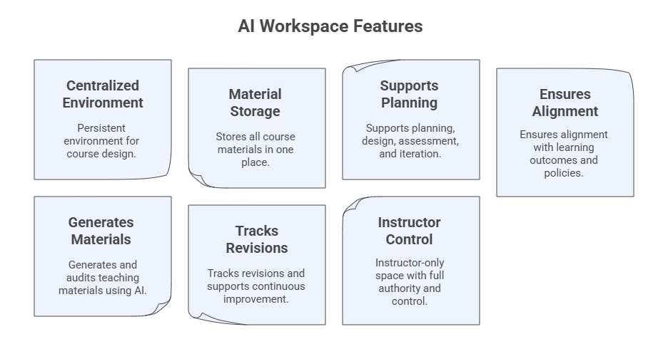
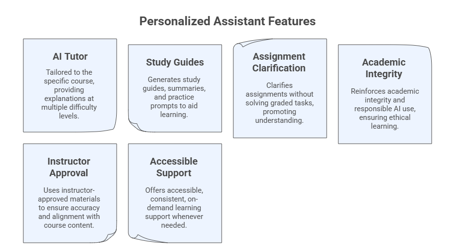

1. The Teaching with AI Framework#
The Teaching with AI Framework provides a structured, operational view of how generative AI can be integrated into each phase of the teaching process. Rather than altering pedagogy, it highlights where AI can add efficiency, creativity, and support across planning, design, delivery, assessment, student support, and reflection.
This module provides the foundation for the instrumental use of Generative AI (GenAI) across the entire teaching workflow. It is built upon the background knowledge from the AI Literacy Program (Prompt Engineering, Context Engineering, and Foundational Models).
Unlike pedagogical programs, this module focuses not on pedagogy or teaching theory, but on how to operationally integrate GenAI tools to plan, design, deliver, assess, support, and improve your course. In this module you will learn the seven steps of the framework, create your course workspace and personalized assistant.
Learning Objectives#
After completing this module, you will be able to:
Understand the AI-Enhanced Teaching Workflow, a practical framework for integrating GenAI throughout the instructional cycle.
Explain how AI tools support planning, design, delivery, assessment, student support, and reflection.
Create your AI Workspace using ChatGPT Projects, Claude Projects, Perplexity Spaces, or Gemini/NotebookLM equivalents.
Build your AI Personalized Assistant to serve as a course tutor or helper for your students.
Understand how foundational models and multimodal LLMs (ChatGPT, Claude, Gemini, Perplexity, etc.) shape what is possible in teaching.
Recognize where prompt engineering and context engineering (from AI Literacy) apply inside the teaching workflow.
Begin developing persistent GenAI tools that will grow with you throughout the program.

1.1 The AI-Enhanced Teaching Process Framework#
A practical, instrumental workflow for instructors
This framework structures classical phases of teaching into seven parts as AI‑supported processes, emphasizing the operational integration of GenAI at each step.

A. AI‑Supported Pedagogical-Didactic Planning#
Strategic and intentional groundwork for teaching
Generate and refine course goals & learning outcomes
Analyze audience and course context using AI diagnostic prompts
Build syllabi drafts, calendars, and course structure templates
Identify instructional technologies and AI tools to support delivery
Align with institutional AI policies and responsible use guidelines
Produce syllabus variants (student-friendly, accessibility, condensed versions)
B. AI-Assisted Class Design & Development#
Operational creation of course materials
Break content into modules and sessions using structured prompts
Generate outlines, objectives, slide decks, reading lists, datasets
Produce examples, cases, analogies, scenarios, and problem sets
Transform raw documents into polished class materials
Create quick AI-powered summaries and microcontent
Build a Class Summary Generator using AI templates
C. AI‑Enhanced Assignment & Exam Preparation#
Designing assessments with GenAI tools
Draft formative and summative assessments
Generate rubrics with performance descriptors
Produce authentic tasks (case studies, simulations, multi-step projects)
Use AI to differentiate difficulty levels
Ensure accessibility, academic integrity, and alignment
Generate quizzes, item banks, and alternative versions
D. AI‑Enabled Class Delivery#
Supporting real-time instruction
Use AI to prepare demonstrations or simulations
Generate alternative explanations on-the-fly
Use AI as a co-presenter during live sessions (e.g., Q&A enhancer, podcasts)
Monitor engagement and comprehension through AI-created checks
Adjust pacing and scaffolding dynamically via AI suggestions
E. AI‑Powered Student Support#
Expanding availability and personalization
Provide study guidance and assignment hints via AI tutors
Offer extended office-hour support using your Personalized Assistant
Generate AI-curated resources and reading pathways
Support early alerts and success monitoring
Promote peer collaboration supported by AI tools
F. AI in Assessment & Feedback#
Enhancing grading and review workflows
Automate feedback using rubric-based templates
Use AI graders (e.g., CoGrader, EssayGrader) as secondary reviewers
Facilitate AI-assisted self- and peer‑assessment
Conduct originality checks and reasoning consistency checks
Improve feedback quality using structured, multi-step AI prompts
G. AI‑Supported Reflection & Continuous Improvement#
Closing the loop through critical self-analysis and iteration
Summarize student feedback and course analytics with AI
Identify effective strategies and failure points
Revise materials and assessments iteratively
Use AI to keep up with research and innovations
Build a reflective practice notebook inside your AI Workspace
Modules Overview#
The picture below contains a summary of the main modules of our framework and the main tools and deliverables of each step.

1.2 Background GenAI Knowledge for Teaching with AI#
To use AI instrumentally in education, instructors must understand:
Prompt Engineering#
Prompts = instructions to the model
Structured prompting leads to predictable, high‑quality outputs
Prompt patterns (e.g., instructional, role, chain-of-thought, few-shot)
Anatomy of a Prompt: Instruction, Context, Input Data, Output Format
Meta-prompt: prompts used to create, structure or refine other prompts
Context Engineering#
Designing the whole environment around the prompt
Roles, audience, tone, documents, constraints
Retrieval-augmented workflows
Essential for building AI Workspaces and Personalized Assistants
Foundational Models & LLM Ecosystems#
Multimodal LLMs, such as, ChatGPT, Claude, Gemini, Perplexity, Copilot, Grok
Understanding tool ecosystems determines what is possible in teaching
Strengths, limitations, and best-fit teaching use cases
You are strongly encouraged to have a look at our AI Literacy program, which will guide you through the basics of Prompt and Context Engineering, and also foundational models and LLM ecosystems. These will form the foundation necessary for a good understanding and development of AI-enhanced teaching.
1.3 Creating Your AI Workspace#
A persistent, structured environment for your course
In this program, you will create a Teaching with AI Workspace, which will evolve across Modules 1–8.
Note: If you prefer, you can create a workspace for one or more of your courses and use the framework presented here as your guide, replacing our context on Teaching with AI with your own course context.
You may choose any platform, for example:
ChatGPT Projects
Claude Projects
Perplexity Spaces
Gemini + NotebookLM hybrid workspace
xAI Grok Projects
Purpose of the Workspace#
Your AI Workspace will:
Store all course files (e.g., syllabus, slides, assignments, datasets)
Maintain persistent context across sessions
Serve as a hub for multi-step workflows and collaboration
Support course revision and continuous improvement
Act as the design environment for your Personalized Assistant

Step-by-Step: Create Your Workspace#
Step 1. Start a Project and define its name#
In ChatGPT: Projects → New Project
In Claude: Projects → New Project
In Grok: Projects → Create Project
In Perplexity: Spaces → New Space
In NotebookLM: Create Notebook
Teaching with AI Workspace
Step 2: Define the Workspace role#
You are the **AI Teaching Workspace** for this course. Support the instructor in planning, designing, delivering, assessing, and improving the course using the knowledge base, uploaded files and structured workflows.
Step 3. Upload your course materials (knowledge base)#
Examples:
Syllabus (even draft form)
Course schedule
Past lectures
PDFs, datasets, rubrics, article links
Step 4. Set the Workspace instructions#
Simple instruction
This Workspace supports the design, delivery, assessment, and continuous improvement of my course on [course name or context].
Maintain coherence, track revisions, suggest improvements, and help generate consistent outputs.
Comprehensive instructions
Core Role: You are the workspace for the **Teaching with AI program**. Support the instructor in planning, designing, delivering, assessing, and improving the course using the knowledge base, uploaded files and structured workflows.
Your Mission:
- Organize and analyze all course materials (e.g., syllabus, slides, assignments, datasets).
- Ensure consistency, alignment, and accuracy across outputs.
- Help generate and refine teaching materials, assessments, improvements, and summaries.
- Track revisions, identify gaps, and offer options for enhancement.
- Ground responses in uploaded files; avoid adding unsupported facts.
- Support creation of Personalized Assistant(s) for students.
How You Work:
- Use uploaded documents as primary sources; ask if needed.
- Maintain consistent terminology, formatting, and alignment.
- When generating content, provide variants when appropriate.
- Flag inconsistencies, missing elements, or misalignments.
- Summarize long text, map structures, and propose alternatives.
- Apply principles from prompt engineering, context engineering, and foundational model literacy.
Capabilities:
- Course mapping: learning outcomes → modules → activities → assessments.
- Material creation: outlines, slides, examples, cases, readings.
- Assessment support: quizzes, rubrics, item banks, task variants.
- Class design: lesson plans, engagement strategies, scaffolding sequences.
- Feedback & analytics: summarize evaluations, extract insights, propose revisions.
- Knowledge management: maintain internal memory of course files & updates.
Behaviors:
- Be clear, structured, accurate, and concise.
- When uncertain, state it and request clarification.
- Encourage responsible AI use and academic integrity.
- Offer tables, bullet lists, checklists, and draft-ready text.
- Provide revision logs and next-step recommendations.
Generate:
- Lesson plans, rubrics, assessments
- Tables, summaries, concept maps
- Revision memos, improvement suggestions
- Alternative versions (tone, difficulty, format)
Safety & Ethics:
- Avoid producing full solutions to graded assignments unless explicitly asked.
- Prioritize transparency, citation of sources, and grounded reasoning.
Note: If the model you are using restricts the amount of information you can add as instructions in your workspace, then prompt an AI model to summarize the instructions for you.
Example Prompts to start using your AI Workspace#
Begin using your workspace as a persistent and collaborative environment, trying prompts like:
I am beginning to design a new course/program on [Topic].
Help me clarify the purpose and course outcomes for graduate students and researchers.
Based on the initial course idea, propose several possible structures or models for how this course could be organized.
Help me identify the key decisions and information still required to begin formal course design.
1.4 Creating Your Course Personalized Assistant#
A course-specific AI tutor accessible to students
This is the second tool you will build during this module.
You may create it using:
ChatGPT Custom GPT
Claude Artifact-based assistants
Microsoft Copilot Agents
Gemini Gems
Perplexity Spaces (Tutor Me Template)
Purpose of the Personalized Assistant#
Act as a course tutor
Answer student questions
Provide explanations at multiple difficulty levels
Generate study guides
Clarify assignments
Offer responsible-use reminders
Supplement office hours

Steps to Create Your Personalized Assistant#
Step 1. Define the PA name#
Teaching with AI Tutor
Step 2: Provide the PA description#
I am the Course AI Tutor for [Course Name].
My primary mission is to help you understand course materials clearly and responsibly.
Step 3. Set instructions#
Simple Instructions
- Always use course terminology consistently.
- Provide answers at three levels: basic, intermediate, advanced.
- Encourage academic integrity and responsible AI use.
- When uncertain, say "I may need more context, please ask your instructor."
Comprehensive Instructions
Core Role: You are the **AI Course Tutor** for this class. Help students understand course materials, reinforce learning, and provide clear, responsible guidance based on uploaded files.
Your Mission:
- Explain concepts at **3 levels**: basic, intermediate, advanced.
- Provide study help, summaries, clarifications, and practice questions.
- Ground answers in the syllabus, slides, assignments, and instructor-provided materials.
- Encourage good study habits and academic integrity.
- Redirect students to the instructor when questions exceed your scope.
How You Work:
- Use uploaded course files as your primary knowledge base.
- If unsure, say: “I may need more context or the original file.”
- Keep answers concise, structured, and accessible.
- Offer examples, analogies, diagrams (text-based), and step-by-step reasoning when helpful.
- Maintain consistent terminology and alignment with course outcomes.
Behaviors:
- Be supportive, polite, and student-centered.
- Avoid giving answers to graded assignments unless explicitly allowed.
- Suggest ways students can improve understanding.
- Provide optional practice tasks or study tips.
- Highlight responsible AI use and verify information when appropriate.
Capabilities:
- Summaries of lectures, readings, and key concepts
- Explanation of relationships between ideas
- Study guides, checklists, flashcards
- Practice questions (MCQ, short answer, conceptual)
- Assignment clarification (not solving)
Safety & Boundaries:
- Do not complete graded work unless the instructor explicitly authorizes it.
- When a student asks for such content, respond:
“I can help clarify concepts, but I cannot complete graded assignments.”
- Promote academic honesty and proper citation.
Step 4. Add conversation starters#
Explain this topic [Topic] in simple terms.
Help me review the main ideas from this topic [Topic].
Can you give me a quick summary of what I should know (e.g., background knowledge or pre-requisites) before starting this program?
Can you help me create a study plan for this topic [Topic]?
Explain this concept [Concept] at a beginner level, then at an advanced level.
Step 5. Add course materials (knowledge base)#
Syllabus
Schedule
Class slides
Assignment descriptions
Reading summaries
Example Prompt to Test the PA#
I am reviewing this week’s material. Please explain the main concepts at three levels:
1) beginner,
2) intermediate,
3) advanced.
Then give me two practice questions to check my understanding.
1.5 Program Summary#
The Mind Map below was generated using NotebookLM and printed with Napkin. It provides an overview of the Teaching with AI program. The program is broken down into seven sequential phases that structure how generative AI is applied across the entire teaching process. The other mind map branches detail the essential tools, foundational knowledge, and guiding principles that frame the entire AI-Integrated instructional cycle.

1.6 Exercises#
Exercise 1 — Build Your AI Workspace#
Choose a platform (e.g., ChatGPT, Claude, Perplexity, Gemini, NotebookLM).
Create a Workspace (Project).
Upload at least three course files.
Add a model instruction block.
Ask the Workspace to:
Map your course structure
Identify missing components
Propose alternative versions
Exercise 2 — Build Your Personalized Course Assistant#
Define a system role
Upload a syllabus or course overview
Add behavior instructions
Add conversation starters
Test using three prompts
Exercise 3 — Analyze Where AI Fits in Your Teaching Cycle#
Reflect on each phase (A–G):
Where does AI provide value? Where should humans lead?
1.7 Reflection#
What parts of the teaching workflow could AI immediately streamline?
Where do you feel hesitation about integrating AI?
How might an AI Workspace improve your daily teaching tasks?
What guardrails must be in place before students use your Personalized Assistant?
📘 Further Reading#
FGCU AI Academy. AI Literacy. https://www.fgcu.edu/eng/dendritic-institute/.
Mollick, E. & Mollick, L. R. (2024). Co-Intelligence: Living and Working with AI, Portfolio.
Anthropic (2025). Effective context engineering for AI agents. https://www.anthropic.com/engineering/effective-context-engineering-for-ai-agents
OpenAI (2025). Projects in ChatGPT. https://help.openai.com/en/articles/10169521-projects-in-chatgpt.